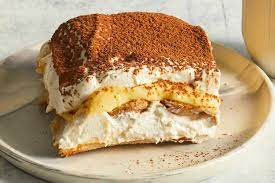

Tiramisu Recipe

Description
This is a recipe for delicious tiramisu! As there are many recipes present over the internet,
we thought of curating some of the finest ingredients for a delicious and cheezy tiramisu.
The recipe is easy to make and also fairly cheap. Is'nt that just awesome 👻
Ingredients:
- 6 egg yolks
- 3/4 cup sugar
- 2/3 cup milk
- 1 1/4 cups heavy cream
- 1/2 tsp vanilla extract
- 1 lb mascarpone cheese
- 1/2 cup strong brewed coffee or espresso, cooled
- 24 ladyfingers
- Cocoa powder for dusting
Recipe:
- In a large bowl, beat egg yolks and sugar until pale and fluffy.
- In a small saucepan, heat milk until just simmering.
- Slowly pour milk into egg mixture, whisking continuously.
- Return mixture to saucepan and cook over low heat, stirring constantly, until mixture thickens and coats the back of a spoon.
- Remove from heat and let cool.
- In a separate bowl, beat heavy cream and vanilla extract until stiff peaks form.
- In another bowl, beat mascarpone cheese until smooth.
- Fold mascarpone cheese into egg mixture, then fold in whipped cream.
- Dip ladyfingers in cooled coffee or espresso and arrange in a single layer in the bottom of a 9x13 inch baking dish.
- Spoon half of the mascarpone mixture over the ladyfingers.
- Repeat layering with remaining ladyfingers and mascarpone mixture.
- Cover and refrigerate for at least 2 hours or overnight.
- Dust with cocoa powder before serving.